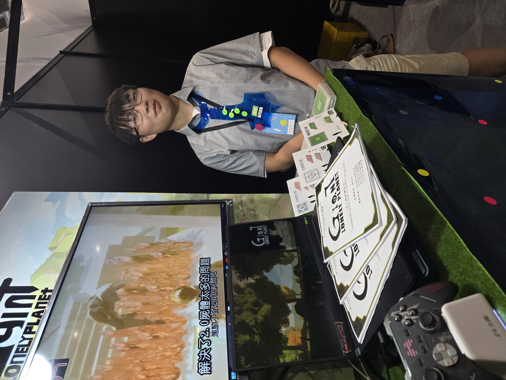

PAGE 04 · DEVLOG
學習與開發日誌
從學習工具、建立戰鬥系統，到完成畢業製作與整理作品集。這裡不是成果清單，而是我如何把想法逐步做成可玩、可測試、也能被理解的設計歷程。
STEP 01建立製作基礎Unity、Unreal、Blender 與跨領域協作。
STEP 02把設計做成可玩戰鬥、Boss、關卡引導與玩家回饋。
STEP 03整理設計判斷將草稿、迭代與實機成果連成完整過程。
01 · FOUNDATION
從工具學習到團隊製作
先理解製作流程，再逐步把企劃、美術與程式之間的溝通變成實際成果。
02 · COMBAT
異界之魂：戰鬥設計練習
以魂系動作 RPG 為題，學習系統拆解、Boss 行為與戰鬥節奏。
03 · WORLD
巨人與孤獨星球：18 個月的製作推進
製作期自 2024 年 10 月至 2026 年 1 月。我負責遊戲企劃，並與程式、美術、建模共同完成四次提報與版本整合。
04 · EXHIBITION
把遊戲帶到展場，讓玩家實際體驗
從校內測試到全國設計展，現場觀察玩家操作、說明作品，並學習如何將遊戲內容轉化為清楚的展覽體驗。

第 45 屆新一代設計展
於南港展覽館 2 館參加 5 月 22 至 25 日展期，向不同學校、產業人士與一般觀眾介紹遊戲企劃、機關設計與實機版本。

新一代設計展攤位 · 點擊查看原圖05 · ENCYCLOPEDIA
建立 Game Design Encyclopedia
把作品企劃、商業遊戲拆解與系統研究整理成可持續補充的設計知識庫。
從作品文件延伸到遊戲設計百科
以 Notion 建立 Game Design Encyclopedia｜遊戲企劃百科，將 GDD、跨遊戲系統比較、玩法拆解與 PRD 練習集中管理。製作流程從資料分類開始，先把作品設定、玩家體驗、系統規則和參考案例拆成可搜尋的資料頁，再逐步補上案例研究與設計判斷，讓它成為作品集之外能持續累積的學習檔案。
查看設計百科06 · ARCHIVE
把完成作品整理成設計檔案
讓觀看者不只看到最終畫面，也能理解過程中做過哪些判斷。
從時間軸繼續進入完整作品
作品庫保留全部過程圖、分類素材與遊戲實機影片，也可延伸查看 Notion 設計百科。